跳过 DRAM 层：MoRI UMBP 在 NVMe 上运行智能体 KV 缓存
智能体服务的大部分流量来自多轮会话，每轮都会重新发送很长的前缀。在重放真实 Claude Code 会话的 AgentX 基准中，一轮输入的中位长度为 142K token，其中超过 96% 是服务器此前已经见过的前缀。
KV 缓存命中意味着 prefill 节点只需处理很小的增量；未命中则迫使系统重新计算整个前缀，消耗 GPU 时间并推迟首 token。在我们用 vLLM 运行 Kimi-K3 的 42 次测试中，prompt token 的 KV 缓存命中率每提高 1 个百分点，例如从 95% 提高到 96%，吞吐量约提高 10%（图 3）。
要命中 KV 缓存，会话下一轮到达时，它的前缀仍必须留在内存中。数十个会话同时打开后，内存会耗尽：先是 GPU 内存，随后通常使用主机 DRAM。但 DRAM 也会装满。Kimi-K3 在测试中每小时向 pool 写入 2.3–4.6 TB KV，因此一个标价约 7.6 万美元的 1.8 TB DRAM pool，只能保存最近 23–47 分钟的数据。
这引出一个简单问题：为什么不跳过 DRAM 层，直接把 vLLM 的 KV pool 放在 NVMe 上？我们在 AMD Instinct™ MI355X GPU 上，用 AMD 开源 MoRI 库中的 KV 缓存 pool——UMBP——进行了测试。在相同容量下，两组不同机器上的 Kimi-K3 测试中，NVMe 与 DRAM 吞吐量差距均小于 1%（图 1）。在另一项更长 prompt 的工作负载中，NVMe 与同容量 DRAM pool 的差距也小于 1%。
该 NVMe pool 没有 DRAM 存储层。DRAM 只用于缓冲写往磁盘的新 KV 和暂存读取数据：约 80 GB，而 DRAM pool 是 1.8 TB。NVMe 的成本取决于写入量，而不是保留量，因此满足 Kimi-K3 写入耐久度要求的磁盘，比 1.8 TB DRAM pool 更便宜，却能保存一整天 KV。
Oracle Cloud Infrastructure 首席基础设施工程师 Dennis Kennetz 表示：
智能体负载会让会话保持数分钟甚至数小时，其 KV 缓存会迅速超过 GPU 内存和主机 DRAM。相同 pool 容量下 NVMe 能跟上 DRAM 的结果，改变了我们对 AI 集群 KV 缓存容量规划的看法。我们很高兴看到这项工作以开放方式在 vLLM 和 MoRI 中完成。
DeepSeek 已经把智能体 KV 缓存放在 SSD 上。DeepInfer 部署说明描述了面向智能体流量保留三天 KV 的配置，每张 GPU 约使用 14.4 TB SSD。本文借鉴了 DeepInfer 把 KV 缓存放在 SSD 上的思路，以及逐层加载和有界重放两项技术，并在 vLLM 上进行测试。
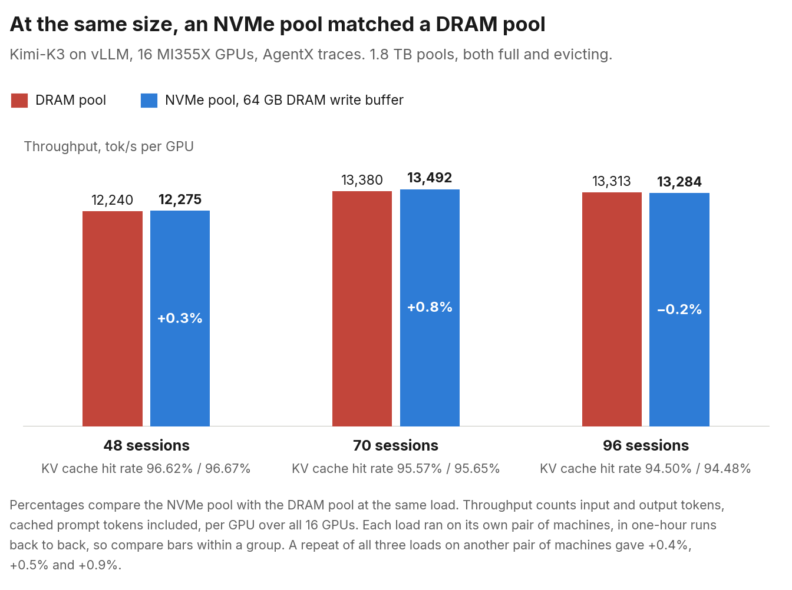
图 1。 Kimi-K3 在 vLLM 上运行：48、70 和 96 个并发会话下，1.8 TB DRAM pool 与 1.8 TB NVMe pool 的吞吐量。NVMe pool 在磁盘前保留 64 GB DRAM 写 buffer。
概要
- 相同容量、相同吞吐量。 1.8 TB NVMe KV pool 与 1.8 TB DRAM pool 匹配：两组不同机器上的测试中，48、70、96 个并发会话下，Kimi-K3 吞吐量差距都小于 1%。面对更长 prompt，70 会话下 NVMe 与同容量 DRAM 的差距也小于 1%。
- 没有 DRAM 存储层。 1.8 TB KV pool 全部位于 NVMe。DRAM 只缓冲最近一两分钟写入（64 GB）并暂存磁盘读取（16 GiB），总计约 80 GB，不到 pool 的 5%。70 会话时，去掉写 buffer 也没有代价；负载更高时应保留。
- 原因。 吞吐量取决于 KV 缓存命中率，而相同容量、相同逐出策略的 pool 会保留相同 KV。vLLM 异步加载 KV，因此在繁忙引擎上，NVMe 较慢的加载会在请求等待 prefill 时完成。
- NVMe 带来的价值。 更长保留时间。DRAM 按保留的 TB 计费；NVMe 按写入的 TB 计费。按标价计算，满足 Kimi-K3 每日 83 TB 写入的磁盘约需 5.9 万美元，可保留一天 KV；7.6 万美元的 DRAM pool 只能保留 31 分钟。
- 限制与路线图。 GPU 计算的每个 KV block 都会写入磁盘并消耗寿命，因此未来会用分布式 pool 把写入分散到更多 SSD。
vLLM 中 KV pool 的工作方式
vLLM 把最近 prompt 的 KV 保存在 GPU 前缀缓存中。GPU 内存装满后，会丢弃最近最少使用的 block；如果会话之后返回，就必须重新计算前缀。KV pool 会把这些 KV 保存在更大介质中，例如主机 DRAM 或本地 NVMe。prefill 引擎把计算出的每个 KV block 保存到 pool；下一轮的前缀不在 GPU 内存时，vLLM 从 pool 加载，而不是重新计算（图 2）。本文的 KV 缓存命中率同时统计 GPU 内存和 pool，即 prompt token 中从两者之一取得 KV 的比例。
我们使用 MoRI 中的 UMBP。MoRI 是 AMD 开源的 GPU RDMA 通信库；vLLM 已使用它在 AMD GPU 的 prefill 与 decode 节点之间传输 KV。UMBP 是 unified memory and bandwidth pool 的缩写，以 key 保存 KV block，在容量满时决定 block 的存放位置和逐出对象。测试中，UMBP 作为独立 server process 与 vLLM prefill 引擎并列运行，prefill 通过 KV connector UMBPStoreConnector 访问。
我们对比两个同为 1.8 TB 的 pool：
- DRAM pool： UMBP 把所有 block 保存在主机内存，容量满时逐出最近最少使用的 KV。
- NVMe pool： 新 KV 先进入小型 DRAM 写 buffer（大多数测试为 64 GB），buffer 填充时再移入两块本地 NVMe。命中 buffer 中的 block 时从 DRAM 加载；命中磁盘上的 block 时，使用 direct I/O 读入 16 GiB 暂存 buffer，再复制到 GPU。
磁盘为每节点两块 3.84 TB Micron 7450 PRO 本地 NVMe SSD，额定耐久度约每日一次全盘写入；每块格式化为 ext4，不使用 RAID。UMBP 将 KV 保存为文件系统上的 segment file，通过 io_uring 使用 direct I/O 读取，因此 Linux page cache 不会从 DRAM 提供读取。系统没有 NVMe-oF，也没有共享或网络文件系统；当一个 pool 跨两个节点时，UMBP 自行通过 RDMA 移动 block。
图 3 和图 5 的许多测试在磁盘前配置更大的 DRAM 层，本文称为 DRAM + NVMe pool。
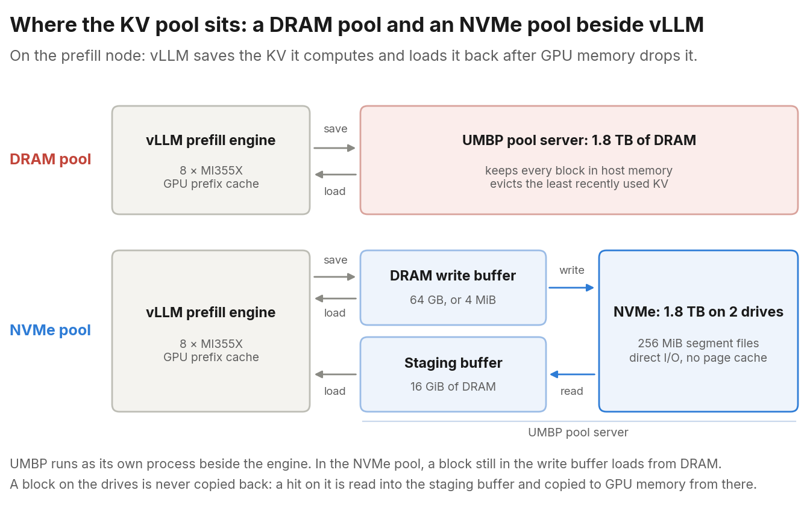
图 2。 KV pool 在 prefill 节点中的位置，以及 DRAM pool 与 NVMe pool 的数据路径。
大部分测试使用混合模型 Kimi-K3。其 93 层中，69 层使用线性注意力 KDA，保留固定大小的运行状态，而不是逐 token KV；另外 24 层使用 MLA，为每个 token 保存压缩 KV。因此 Kimi-K3 pool 会同时保存 KV block 和 KDA 状态 checkpoint，后续轮次可从 checkpoint 在 prompt 中途恢复。DeepSeek-V4-Pro 和 DeepSeek-V4.1-Flash 提供少量补充数据，完整数字见附录。
Kimi-K3 和 DeepSeek-V4-Pro 都在 16 张 MI355X GPU 上以 1P1D 服务：TP8 prefill + TP8 decode。prefill 节点通过 RDMA 把每个请求的 KV 发送到 decode 节点，并在多数测试中托管 pool。AgentX 背后的负载生成器 AIPerf 按记录时序重放两个公开智能体工作负载：
- AgentX traces： SemiAnalysis 为 InferenceX 套件的 AgentX 基准记录的 393 个 Claude Code 会话。
- kvlab 40 天语料库： WEKA 从 2026 年 9 月 5 日到 10 月 14 日记录并随开源智能体重放基准 kvlab 发布的约 3,200 个会话。prompt 更长：本次重放请求的中位长度为 165K token，而 AgentX 为 142K。
负载表示同时重放的会话数量。完整设置见附录。
相同容量下，NVMe 与 DRAM 匹配
在 48、70 和 96 个会话下，NVMe 与 DRAM 的差距均小于 1%（图 1）。每次对比都连续重放一小时 AgentX traces，在同一机器、相同镜像和设置下依次运行两种 pool；两种 pool 都会装满并逐出。另一对机器重复三种负载时，NVMe 分别领先 0.4%、0.5% 和 0.9%；同一配置在一对机器上的重复波动为 0.3%–0.45%。吞吐量按 AgentX 定义，统计全部 16 张 GPU 的每 GPU 输入与输出 token/s，并包含缓存 prompt token。
KV 缓存命中率最大只相差 0.08 个百分点。48 和 70 会话下 TTFT 中位数差距小于 0.3 秒；96 会话下小于 0.8 秒，此时请求约等待 24 秒。
这些测试较依赖 GPU 内存：三个负载下，GPU 内存分别提供 96%、90% 和 79% 的 prompt token，pool 分别提供 1%、5% 和 16%。磁盘每小时写入 2.3–3.5 TB，是读取量的 17、3.8 和 1.5 倍；读取峰值为每小时 2.3 TB，约 0.64 GB/s。
DRAM 只缓冲写入并暂存读取
NVMe pool 在两处使用 DRAM：64 GB 写 buffer 接收新 KV，再送往磁盘；16 GiB 暂存 buffer 接收磁盘读取，再复制到 GPU。按图 1 的写入速率，写 buffer 只能保存最近一两分钟 KV，仅提供 pool 读取量的 0.6%–1.6%。因此我们也把写 buffer 设为 UMBP tier policy 允许的最小值 4 MiB，仍在磁盘保留 1.8 TB。
| Kimi-K3、AgentX、70 会话 | 每 GPU tok/s | KV 缓存命中率 | TTFT p50 / p90 |
|---|---|---|---|
| 1.8 TB DRAM pool | 13,380 | 95.57% | 5.19 / 23.40 s |
| 1.8 TB NVMe pool，64 GB DRAM 写 buffer | 13,492（+0.8%） | 95.65% | 4.89 / 21.26 s |
| 1.8 TB NVMe pool，无写 buffer | 13,847（+3.5%） | 95.79% | 5.53 / 19.18 s |
去掉写 buffer 后，NVMe pool 比 DRAM pool 高 3.5%。另一对机器的重复测试还加入 96 会话：
| Kimi-K3、AgentX、另一对机器 | 每 GPU tok/s | KV 缓存命中率 | TTFT p50 / p90 |
|---|---|---|---|
| 70 会话，1.8 TB DRAM pool | 13,730 | 95.64% | 4.73 / 21.36 s |
| 70 会话，1.8 TB NVMe pool，无写 buffer | 14,078（+2.5%） | 95.83% | 4.27 / 16.08 s |
| 96 会话，1.8 TB DRAM pool | 13,296 | 94.43% | 24.60 / 67.20 s |
| 96 会话，1.8 TB NVMe pool，无写 buffer | 12,403（−6.7%） | 94.00% | 23.38 / 94.56 s |
70 会话时，两对机器都不需要写 buffer，后面的长 prompt 对比也未使用。96 会话时写 buffer 很重要：pool 提供约 15% prompt token，磁盘每小时写入 3.2 TB。没有 buffer 时，KV 命中率低 0.43 个百分点，按图 3 拟合约损失 4%；请求等待 prefill 更久，吞吐量低 6.7%。使用 64 GB buffer 时，96 会话下 NVMe 与 DRAM 匹配。每项结果均来自一次运行。
更长的 prompt
KV 加载量随 prompt 增长，因此我们还运行 kvlab 语料库。70 会话下，无写 buffer 的 1.8 TB NVMe pool 达到 8,110 tok/s/GPU，1.8 TB DRAM pool 为 8,162，NVMe 低 0.6%。NVMe 命中率更高 0.29 个百分点（91.89% 对 91.60%）。TTFT 中位数为 88.8 秒对 92.6 秒，p90 为 156.9 秒对 149.1 秒。两项均是单次测试，该集群同一配置运行间波动约 ±2.5%。
| Kimi-K3、kvlab、70 会话 | 每 GPU tok/s | KV 缓存命中率 | TTFT p50 / p90 |
|---|---|---|---|
| 1.8 TB DRAM pool | 8,162 | 91.60% | 92.6 / 149.1 s |
| 1.8 TB NVMe pool，无写 buffer | 8,110（−0.6%） | 91.89% | 88.8 / 156.9 s |
DeepSeek-V4-Pro 在 kvlab 上的三组对比均与 DRAM 相差不超过 1.2%，其中两组 pool 从未装满（见附录）。
NVMe 为什么跟得上
NVMe 读取比 DRAM 慢，但三个事实阻止这种差距传导到吞吐量。
吞吐量取决于 KV 命中率，而同容量 pool 会保留相同 KV。 在 96% 命中率下，prefill 节点计算 4% prompt token；在 95% 下计算 5%，相同流量下 prefill 工作增加 25%。Kimi-K3 在 AgentX、70 会话下的 42 次测试中，pool 分别位于 DRAM、NVMe 或二者，容量和设置各异；仅 KV 命中率就解释了吞吐量方差的 96%（去掉一次 0.9 TB pool 测试后为 92%）。prompt token 命中率每提高 1 个百分点，约增加 1,280 tok/s/GPU。
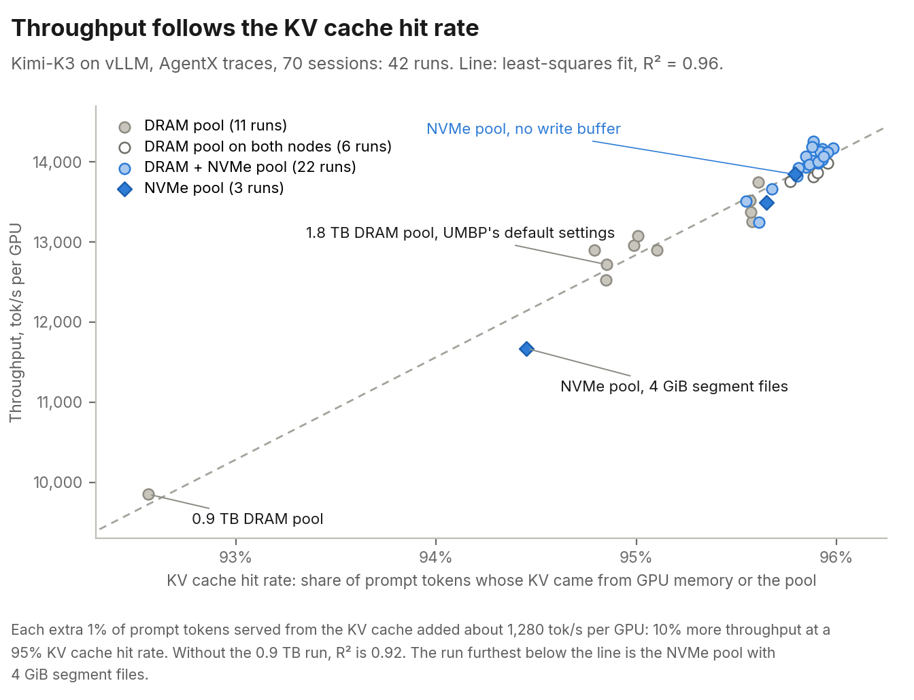
图 3。 Kimi-K3 在 AgentX traces 上：吞吐量与 KV 缓存命中率的关系，每个点代表一次运行。
pool 保留什么取决于容量和逐出策略，而不是介质。两种 pool 使用相同规则：最冷 KV 先逐出，checkpoint 的老化速度比 KV 快。因此同容量下几乎保留相同 KV；六组 AgentX 对比中命中率最大差距为 0.08 个百分点。这需要修复 NVMe pool 释放空间的方式，见下文第一条经验。
一次命中的价值远高于加载成本。 MoRI 指南中的单请求测试使用 128K token 前缀：DRAM 命中后 0.45 秒产生首 token，NVMe 命中后 0.84 秒，重新计算则需 7.7 秒（SGLang 上 Kimi-K2.6，8 块磁盘，其中 6 块在另一节点）。完全无队列时，NVMe 相对 DRAM 约增加 0.4 秒；未命中则约增加 7 秒。
请求等待 prefill 时，加载已经完成。 vLLM KV connector API 支持异步加载：scheduler 暂缓该请求直到 KV 到达，同时继续调度其他请求。UMBP connector 也异步查找 KV。繁忙引擎上的请求本来就要在 prefill 队列中等待，加载可隐藏在等待内（图 4）。DeepSeek-V4-Pro 在 64 会话下，从 DRAM 加载需 0.80 秒，从 NVMe 需 0.85 秒，两者都在请求开始 prefill 约 2 秒前完成。
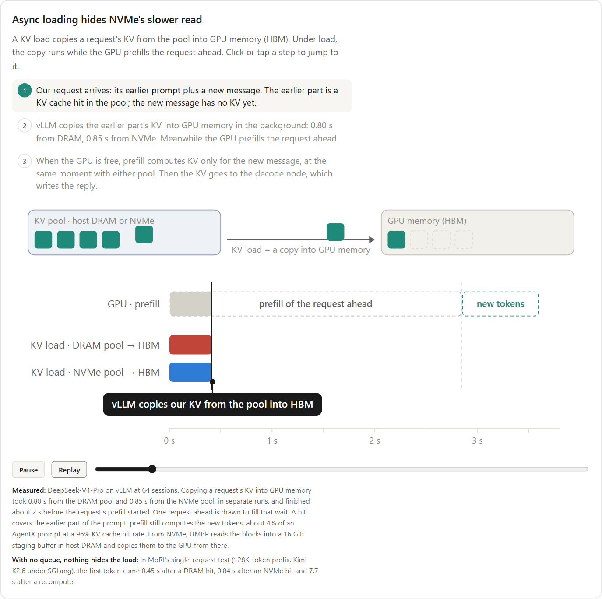
图 4。 KV 加载隐藏在等待 prefill slot 的时间中。
vLLM connector API 提供了这种重叠；在 SGLang 中，NVMe pool 需要一个尚未 upstream 的额外补丁。
DeepInfer 的逐层加载采用另一条路径：forward pass 期间每次把一层 KV 复制到 GPU。我们在 vLLM 上为 Kimi-K3 与 NVMe pool 实现了该方式。空闲引擎上，单次 pool 命中快 14%–55%（一次测试为 0.91 秒对 1.32 秒）；负载下，在所有会话数上，它与异步加载的平均 TTFT 和 prefill 吞吐量匹配。加载请求开始更早，但 batch 中其他请求最多要等待相同时间。
NVMe 带来的价值：保留时间
NVMe 的价值是更长保留：更大的 pool 会让每个会话的 KV 保持更久，使轮次间暂停的会话仍能找到前缀。
会话超过某一层容量后，吞吐量会崩溃。 图 5 展示 Kimi-K3 在 kvlab 语料库中随会话数量增长的表现。只使用 GPU 内存时，命中率从 32 会话的 90% 降到 48 会话的 41%，吞吐量下降 80%。1.0 TB DRAM pool 在 32 会话后开始下降，到 70 会话时吞吐量损失 81%。跨两个节点磁盘的 4.6 TB NVMe pool 在所有测试负载下都把命中率保持在 92.7%–95.8%。70 会话时达到 8,813 tok/s/GPU，是 1.0 TB DRAM pool 的 5.1 倍，命中率为 93%，而 DRAM 仅 52%。差距来自容量，而不是介质：另一项测试中，1.8 TB DRAM pool 在 70 会话仍保持 91% 命中率。1.0 TB DRAM + 1.8 TB NVMe pool 在共同测试的每个负载下都与 4.6 TB NVMe pool 相差不超过 3%。
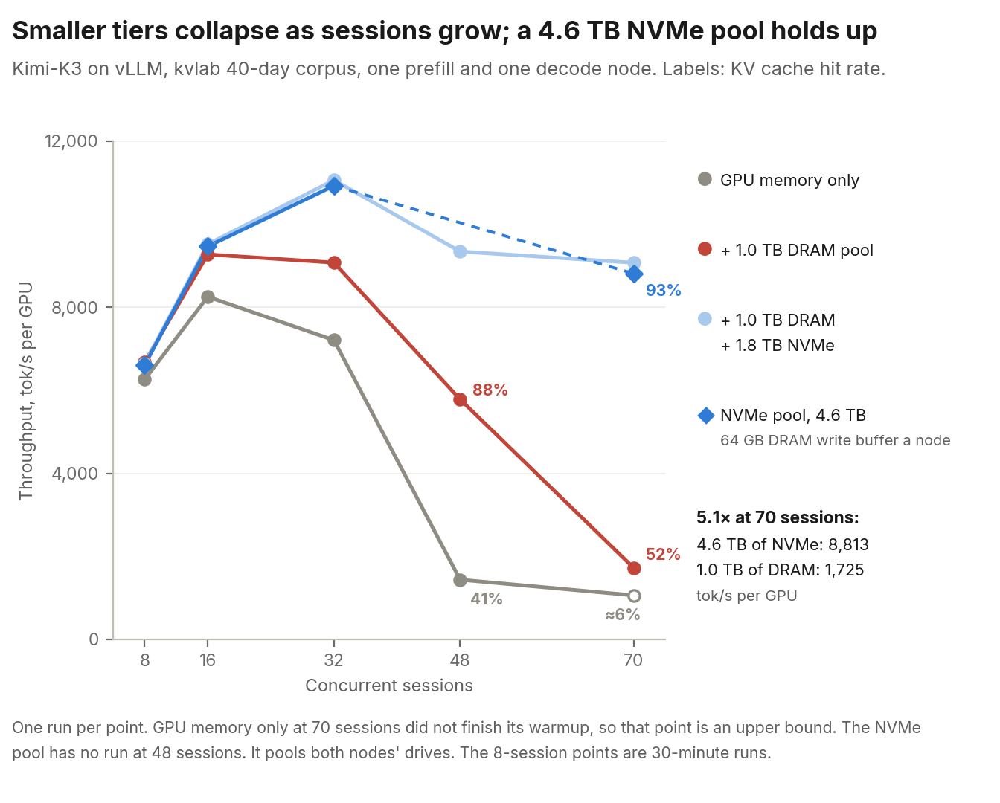
图 5。 Kimi-K3 在 kvlab 上：不同内存层级配置下，吞吐量随并发会话变化。
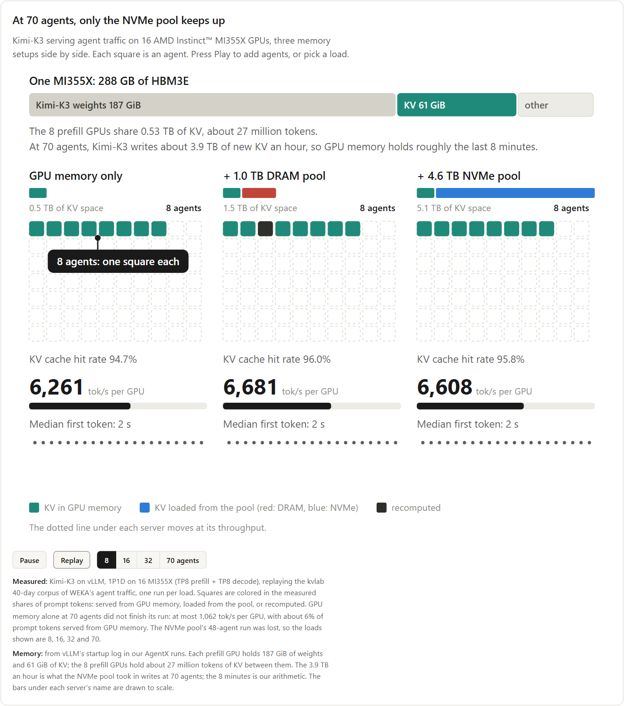
下降非常陡峭，因为一次未命中会引发更多未命中：重新计算拖住 prefill 节点，队列增长，会话轮次之间等待更久，KV 必须在 pool 中存活更长时间。70 会话时，DRAM pool 的 TTFT 中位数达到 743 秒。
pool 保留 KV 的时间约等于容量除以写入速率。 每小时写入 2.3–4.6 TB 时，1.8 TB pool 保存 Kimi-K3 KV 的时间为 23–47 分钟：AgentX 70 会话时 36 分钟，96 会话时 31 分钟。是否足够取决于轮次间暂停时长。我们用 AgentX 记录时序模拟 LRU pool（图 6）。保留 36 分钟的 pool 相比永不逐出的 pool，会多丢失约 1% prompt token；一小时为 0.7%，三小时为 0.3%。模型还预测把 pool 从 1.8 TB 增到 3.0 TB 的收益：0.34 个百分点，实测为 0.32。
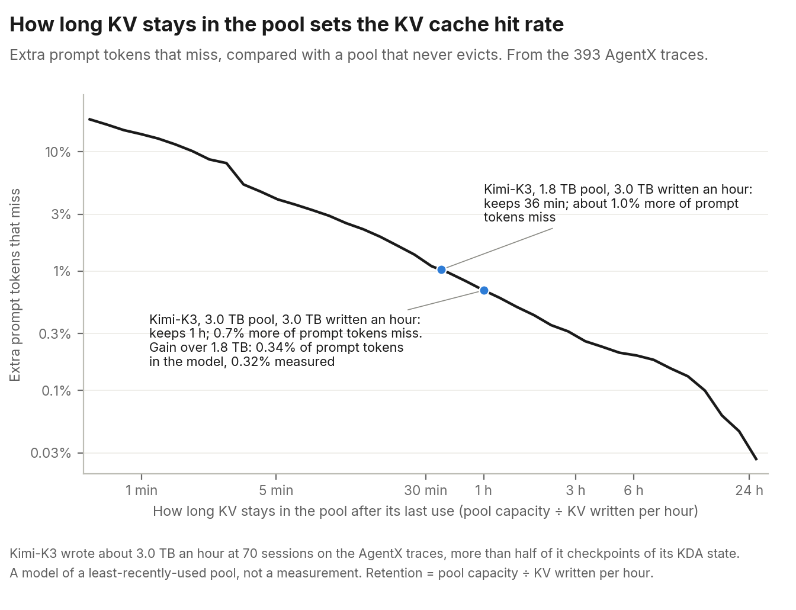
图 6。 相对永不逐出的 pool，额外未命中 prompt token 比例与 KV 保留时间的关系。
成本：DRAM 按保留 TB，NVMe 按写入 TB
DatacenterDisk 在 2026 年 11 月 13 日列出的中位价格约为：server DDR5 每 GB 42 美元，企业 SSD 每 TB 666 美元。DRAM pool 的成本是购买价，即每保留 1 TB 约 4.2 万美元。NVMe pool 会随写入磨损：每日一次全盘写入额定值的磁盘，五年可承受 1,825 次全盘写入，因此每写 1 TB 约消耗 0.36 美元磁盘寿命。
按写入量规划 NVMe。 prefill 引擎计算的每个 block 都会进入 pool，无论后续轮次是否读取。AgentX 96 会话下，Kimi-K3 每小时写入 3.5 TB，即每天 83 TB。1.8 TB 测试 pool 位于两块 3.84 TB、额定每日约一次全盘写入的磁盘上；96 会话时两块磁盘每天承受约 11 次全盘写入，约 5.5 个月就会耗尽额定寿命。未来会用分布式 pool 把写入分散到更多 SSD。
若磁盘额定每日一次写入，总容量需要达到 83 TB；此容量也刚好能保存一天 KV。因此在一天保留时间以内，增大 NVMe pool 不增加额外成本，而增大 DRAM pool 每 TB 增加 4.2 万美元（图 7）。
NVMe pool 的五年成本取磁盘购买价和写入消耗寿命两者中的较大值，再加约 3,400 美元 DRAM（64 GB 写 buffer + 16 GiB 暂存）。因此，随磨损更换的 1.8 TB NVMe pool 与能保存一天的 83 TB pool 成本相同，约 5.9 万美元。1.8 TB DRAM pool 约 7.6 万美元，保存一天的 DRAM pool 约 350 万美元。在保留时间低于约 24 分钟（按该写入率为 1.4 TB）时，DRAM 更便宜。
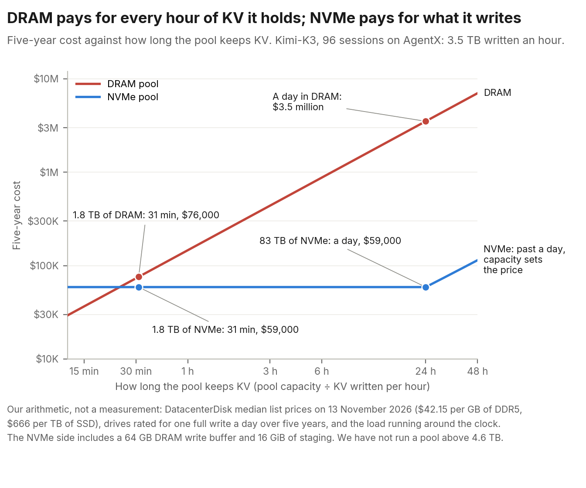
图 7。 AgentX 96 会话下，Kimi-K3 的五年成本与保留时间；按标价计算。
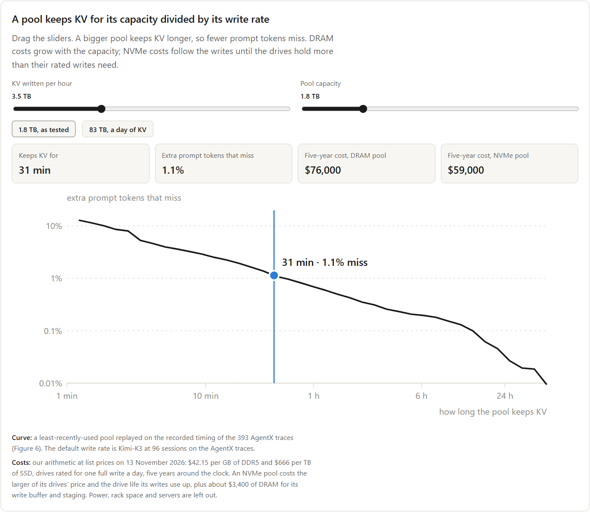
一天保留能带来什么？图 6 模型显示，相比 31 分钟，一天保留会让 AgentX 少约 1% prompt token 未命中；按图 3 拟合，大致对应 10% 吞吐量。该估算串联两个拟合模型：保留模型只在 36 分钟到一小时之间得到测试，吞吐量拟合来自 70 会话。
更少写入意味着需要更少磁盘。Kimi-K3 超过一半写入来自 checkpoint，下文第三条经验展示了丢弃旧 checkpoint 能减少多少。
这些成本是按标价计算，并非测量值；假设负载五年全天运行，未计入功耗、机架空间和承载磁盘的服务器。
实现过程中的三条经验
NVMe 上有一个设置至关重要。使用 UMBP 默认 segment file 时，AgentX 70 会话下 NVMe pool 比 DRAM 慢 12.8%；缩小文件后差距消失。另外两项修改无论介质都能提高 KV 命中率，它们分别在 DRAM 和 DRAM + NVMe pool 上测量，因此收益不能简单相加。
1. 使用小 segment file 释放 NVMe 空间。 UMBP 在 NVMe 上只追加写入：每个 block 写在 segment file 末尾。逐出单个 block 不会立即释放空间，只有删除整个文件才会回收。UMBP 会选择 live block 最少且最近使用时间最早的文件，并一并逐出其中仍存活的 block。默认 4 GiB 文件每次释放都会把仍在使用的 KV 与过期 KV 一起丢弃。仅把文件改为 256 MiB，就使 70 会话下 Kimi-K3 命中率从 94.45% 提升到 95.65%，TTFT p90 从 63.0 秒降至 21.3 秒，吞吐量从 11,672 提升到 13,492 tok/s/GPU（+15.6%），让 NVMe 从比 DRAM 低 12.8% 变成高 0.8%。代价是打开更多文件。
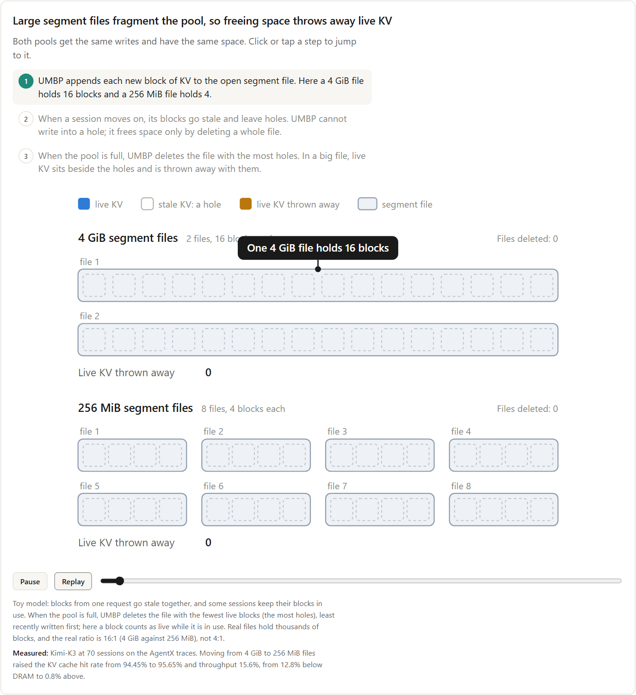
2. 告诉 pool GPU 仍在使用哪些 KV。 GPU 内存会自行提供最热前缀，pool 看不到这些 block 被读取，于是把它们当作未使用并优先逐出；GPU 后来丢弃某个 block 时，pool 中副本可能已经消失。启用 touch 后，vLLM connector 会把每次 GPU 前缀命中报告给 pool，pool 将其标记为最近使用（MoRI #779、charxwu/vllm-upstream#19）。70 会话、DRAM + NVMe pool 的两次测试中，touch 分别提高吞吐量 2.1% 和 3.9%，把 TTFT p99 从 70–77 秒降到 35–43 秒。图 1 两种 pool 都使用 touch，并会刷新磁盘上的副本。
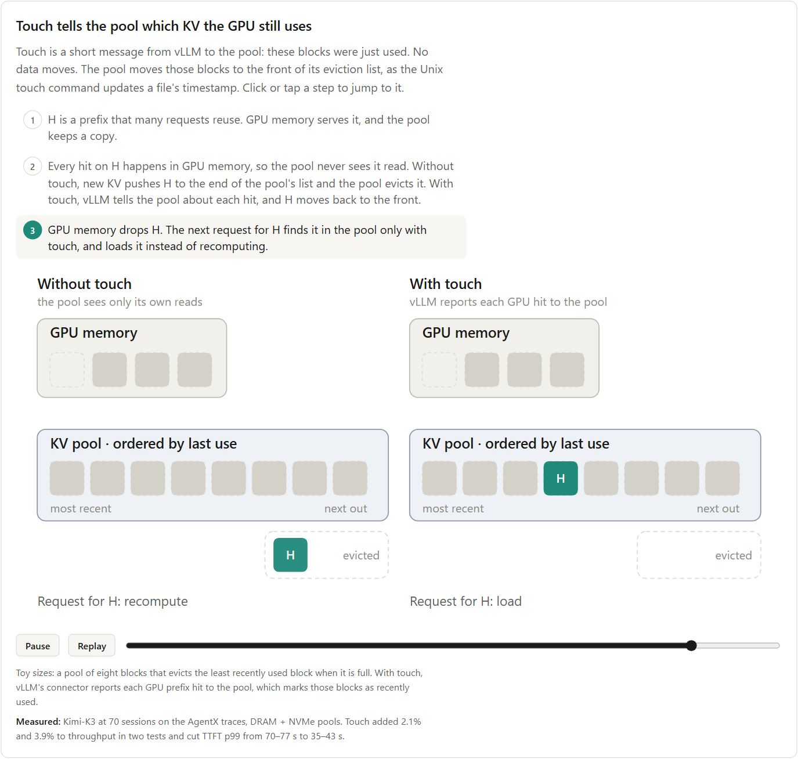
3. 更频繁地为混合模型建立 checkpoint。 只有 GPU 内存或 pool 在某一点保存模型完整状态时，轮次才能复用该处前缀；Kimi-K3 的 KDA 状态只存在于 vLLM 保存 checkpoint 的位置。默认只在 prompt 末尾建立 checkpoint，因此只共享早期 prompt 一部分的轮次，在分叉点找不到 checkpoint，只能重新计算。每 7,168 token 增加一个 checkpoint（--prefix-cache-retention-interval 7168），在 kvlab、8 会话、DRAM pool 下把命中率从 91.4% 提高到 95.6%，吞吐量从 5,113 提升到 6,791 tok/s/GPU（+33%）。
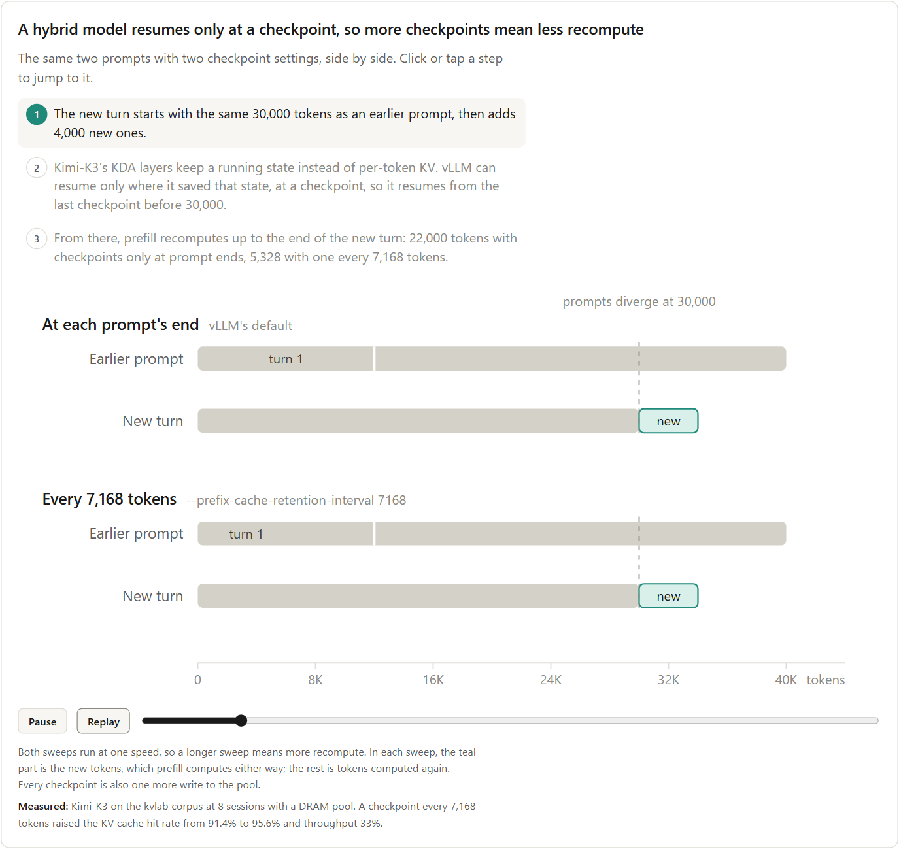
checkpoint 也会产生写入。即使使用 vLLM 默认间隔，它们仍占 Kimi-K3 AgentX NVMe 写入的一半以上。后续轮次从某个 checkpoint 恢复并远离后，connector 可将其标记为已替代；UMBP 在它离开 DRAM 时直接丢弃，不再写入 NVMe。磁盘前配置 1.8 TB DRAM 时，这把 70 会话 NVMe 写入从每小时 2.26 TB 降到 1.05 TB（−53%）。命中率不变，但吞吐量下降 1.0%，TTFT p99 从 38 秒升到 62 秒。小写 buffer 下，checkpoint 在到达 NVMe 前被替代的机会更少；图 1 没有丢弃 checkpoint。
滑动窗口层也有类似问题。DeepSeek-V4.1-Flash 的窗口只有 128 token，因此 DeepInfer 有界重放不保留窗口 checkpoint，而是在命中时根据最后 128 token 重建窗口。与每 2K token 建立窗口 checkpoint 相比，该方法吞吐量提高 2.2×（DRAM pool、288 会话、kvlab）。
根据工作负载规划 pool
- 测量写入速率。 运行峰值负载，读取 pool 每小时向磁盘写入多少 TB。UMBP 通过
/metrics暴露计数器。 - 选择保留时间。 容量等于写入速率乘以 KV 必须存活的时间。对每个后续请求会复用的 prompt block，测量自上次使用后的间隔；保留时间为 T 的 pool 会丢失所有间隔超过 T 的 block。图 6 就由此构建。
- 检查磁盘磨损。 pool 填满磁盘时，每日全盘写入次数等于 24 除以保留小时数。保留一天意味着每日每盘写一次；更小 pool 需要更高耐久等级，或减少写入。
+
+
+## 限制
+
+- 高读取比例。 同容量测试中，pool 最多只提供 16% prompt token。我们尚未在 pool 提供大多数 token 时比较 NVMe 和 DRAM。DeepSeek-V4-Pro 超过 64 会话后，pool 会提供 64%–86% prompt token，DRAM pool 读取峰值接近 27 GB/s，但对比只做到 64 会话。
+- 轻负载。 没有队列可以隐藏加载时，NVMe 的额外时间会直接加到 TTFT；MoRI 的 128K token 测试约增加 0.4 秒。
+- 单次运行。 多数结果，包括无写 buffer 和长 prompt 对比，来自单次运行。
+- 规模。 最大 NVMe pool 为跨两节点 4.6 TB；保存一天的 pool 只是计算结果。全部测试都在 MI355X 上使用 UMBP，DeepSeek-V4.1-Flash 尚未在 NVMe 上运行。
+- 上游代码。 部分改动仍在 upstream 过程中，若干已有公开 PR，其余正在提交到 vLLM 和 MoRI。
+- 每 token KV 更多的模型。 Kimi-K3 每 token 约保存 14 KB KV（24 个 MLA 层，每层 FP8 KV 576 B），DeepSeek-V4-Pro 使用 FP8 时约 5.5 KB，BF16 时约 9.9 KB，均不含 checkpoint。没有 MLA 的稠密模型会保存多倍数据，需要相应增加磁盘带宽。
+
+## 在 vLLM 上运行
+
+UMBPStoreConnector 已进入 vLLM main，由截至 11 月 13 日的十个 PR 系列合入，起始为 #61789。prefill 引擎把它与向 decode 节点传 KV 的 MoRIIOConnector 一同加入 KV transfer 配置；decode 引擎只保留 MoRIIO consumer。Kimi-K3 运行中的主要参数如下：
+
+~~~bash
+vllm serve moonshotai/Kimi-K3 --tensor-parallel-size 8 \
- --enable-prefix-caching --prefix-cache-retention-interval 7168 \
- --kv-transfer-config '{"kv_connector": "MultiConnector", "kv_role": "kv_both",
- "kv_connector_extra_config": {"connectors": [
{"kv_connector": "MoRIIOConnector", "kv_role": "kv_producer","kv_connector_extra_config": {"backend": "rdma"}},{"kv_connector": "UMBPStoreConnector", "kv_role": "kv_both","kv_connector_extra_config": {"mode": "standalone", "endpoint": "/run/umbp/pool.sock","load_async": true, "lookup_async": true, "enable_partial_hash_hits": true}}]}}'
+~~~
+
+kvlab 测试设置 --prefix-cache-retention-interval 7168，图 1 AgentX 测试保留 vLLM 默认值。enable_partial_hash_hits 允许命中在任意 hash block 结束，hash block 可小于 KV cache block。
+
+UMBP pool server 在同一节点运行。tier policy（policy.json）指定磁盘与容量，并把 64 GB 写 buffer 放在磁盘前。buffer 逐出 block 时才移至磁盘（"offload_trigger": "on_evict"），且从不提升回 DRAM（"promote_trigger": "never"），因此磁盘命中总是从磁盘读取。server 命令如下：
+
+~~~bash
+UMBP_BACKEND_POLICY=policy.json UMBP_DRAM_CAPACITY=64000000000 UMBP_DRAM_USE_HUGEPAGES=1
+UMBP_SSD_SEGMENT_SIZE=268435456 UMBP_SSD_VERIFY_CRC=0 UMBP_SSD_DURABILITY=relaxed \
- umbp_standalone_server unix:///run/umbp/pool.sock +~~~
+UMBP_SSD_SEGMENT_SIZE=268435456 设置 256 MiB segment file。tier policy 从 11 月 17 日合并的 MoRI #967 起才支持三个 UMBP_SSD_* 设置；旧 build 会静默使用 4 GiB 文件、校验和及同步写入。UMBP_SSD_VERIFY_CRC=0 跳过 CRC 验证，便于与不使用校验和的 DRAM 对比；生产 pool 可启用，指南测得验证占读取时间的 51%–67%。70 会话下可把 UMBP_DRAM_CAPACITY 和 policy 中 DRAM 容量设为 4194304（4 MiB）以去掉写 buffer；重负载下应保留 64 GB。
+
+## 致谢
+
+特别感谢 Pin Siang Tan、Tian Di、Ma Ning、Wu Yutong、Wu Yanglong、Zhang Figo、Xiaorui Wu、Bill He、Gilbert Lei、Badr Sowid、Maral Bahari、Ye Hur Cheong、Jun Kang Chow、Tun Jian Tan、HongXia Yang、Sun Peng。也感谢 DeepSeek 发布 DeepInfer 和部署说明，SemiAnalysis 提供 AgentX 与 InferenceX，以及 WEKA 提供 kvlab 和 40 天语料库。
+
+## 附录：测试方法
+
+- 硬件与拓扑。 16 张 AMD Instinct MI355X GPU 上的 1P1D：TP8 prefill + TP8 decode，每个节点各 8 张。Kimi-K3 两节点还使用 DCP8。prefill 通过 MoRIIO 和 RDMA 向 decode 发送 KV。所有 Kimi-K3 decode 测试都使用 DSpark，4 个草稿 token，合成接受长度 3.36。每节点两块 3.84 TB Micron 7450 PRO（约 1 DWPD）、无 RAID；主机为两颗 AMD EPYC 9575F 64 核 CPU 和 3 TB DRAM；Linux 6.8，UMBP 通过 io_uring 使用 direct I/O。两种模型均使用 FP8 KV。
+- 工作负载。 AgentX 包含 393 会话、98,827 请求和 216 亿 prompt token，以 64-token block hash 发布。kvlab 40 天语料库包含 3,190 会话和 370,658 请求；转换到 AIPerf 后保留 3,164 会话、325,755 请求和 916 亿输入 token。实际重放 prompt 中位数 165K，p90 为 306K。
+- 运行方式。 AgentX 在 37–46 分钟 warmup 后测量一小时。kvlab 70 会话 warmup 约 65 分钟后测量一小时；少量低会话配置测量 20 或 30 分钟。DRAM tier 在 97% 开始逐出、93% 停止；NVMe tier 为 95% 和 90%。NVMe 关闭校验和并使用 relaxed durability。
+- 软件。 图 5 及附录最后四行使用 vLLM 0.33.0rc1.dev1065+g083fbac02。部分 DeepSeek-V4-Pro 数据使用不同 build。
+- 正在 upstream 的改动。 connector touch、异步 lookup 等待和混合模型前缀恢复位于 charxwu/vllm-upstream#19。UMBP eviction class、UMBP_TRANSITION_WORKERS、更密集 checkpoint、lookup 后保留和批量 KDA checkpoint kernel 将通过后续 PR 提交。
+- 其他 checkpoint 结果。 pool 中的窗口 checkpoint 把 DeepSeek-V4-Pro 命中率从 78.4% 提高到 89.9%，吞吐量从 5,298 提高到 9,326 tok/s/GPU（+76%）。DeepSeek-V4.1-Flash 的 bounded replay 从 53,011 提高到 115,834 tok/s/GPU，并把每 prompt token 的 pool 字节数从 1,626 降到 396。
+
+每一行都是一组 DRAM pool 与 NVMe pool 对比：
+
+| 工作负载与 pool | 负载 | DRAM tok/s/GPU | NVMe tok/s/GPU | NVMe 相对 DRAM | 命中率 DRAM / NVMe | TTFT p50 DRAM / NVMe | TTFT p90 DRAM / NVMe |
+| --- | --- | --- | --- | --- | --- | --- | --- |
+| 同容量，均装满并逐出 | | | | | | | |
+| Kimi-K3，AgentX，均 1.8 TB | 48 | 12,240 | 12,275 | +0.3% | 96.62% / 96.67% | 1.57 / 1.57 s | 7.92 / 7.15 s |
+| | 70 | 13,380 | 13,492 | +0.8% | 95.57% / 95.65% | 5.19 / 4.89 s | 23.40 / 21.26 s |
+| | 96 | 13,313 | 13,284 | −0.2% | 94.50% / 94.48% | 24.95 / 24.39 s | 62.57 / 56.33 s |
+| Kimi-K3，AgentX，另一对机器重复 | 48 | 12,387 | 12,440 | +0.4% | 96.63% / 96.68% | 1.61 / 1.63 s | 7.63 / 7.38 s |
+| | 70 | 13,639 | 13,710 | +0.5% | 95.61% / 95.69% | 4.73 / 4.80 s | 22.23 / 20.83 s |
+| | 96 | 13,182 | 13,304 | +0.9% | 94.44% / 94.47% | 23.63 / 24.38 s | 73.11 / 55.89 s |
+| Kimi-K3，AgentX，无写 buffer | 70 | 13,380 | 13,847 | +3.5% | 95.57% / 95.79% | 5.19 / 5.53 s | 23.40 / 19.18 s |
+| Kimi-K3，另一对机器，无写 buffer | 70 | 13,730 | 14,078 | +2.5% | 95.64% / 95.83% | 4.73 / 4.27 s | 21.36 / 16.08 s |
+| | 96 | 13,296 | 12,403 | −6.7% | 94.43% / 94.00% | 24.60 / 23.38 s | 67.20 / 94.56 s |
+| Kimi-K3，kvlab，均 1.8 TB，无写 buffer | 70 | 8,162 | 8,110 | −0.6% | 91.60% / 91.89% | 92.6 / 88.8 s | 149.1 / 156.9 s |
+| DeepSeek-V4-Pro，kvlab，约每节点 2 TB | 32 | 15,459 | 15,474 | +0.1% | 差距小于 0.1% | — | 24.03 / 23.43 s |
+| pool 未装满：测试加载而非容量 | | | | | | | |
+| DeepSeek-V4-Pro，4 TB DRAM / 2.8 TB NVMe | 32 | 17,067 | 17,235 | +1.0% | 差距小于 0.1% | — | 14.80 / 14.17 s |
+| | 64 | 20,262 | 20,502 | +1.2% | 差距小于 0.1% | — | 54.96 / 52.71 s |
+| 未使用 checkpoint 改动 | | | | | | | |
+| Kimi-K3，kvlab，均 1.8 TB | 8 | 6,791 | 6,570 | −3.2% | 95.57% / 95.49% | 1.59 / 1.74 s | 9.70 / 11.17 s |
+| | 16 | 9,493 | 9,377 | −1.2% | 94.20% / 94.25% | 3.04 / 3.36 s | 17.05 / 17.37 s |
+| | 32 | 10,424 | 9,873 | −5.3% | 93.58% / 93.64% | 27.07 / 28.50 s | 49.57 / 56.39 s |
+| | 70 | 7,677 | 6,639 | −13.5% | 91.10% / 90.49% | 96.80 / 116.06 s | 165.03 / 211.27 s |
+
+逐层加载与 vLLM 异步加载的对比：
+
+| Kimi-K3、NVMe pool | 从 pool 加载的请求 | 平均 TTFT（异步 / 逐层） | Prefill tok/s（异步 / 逐层） |
+| --- | --- | --- | --- |
+| 16 会话 | 2.5% | 7.6 / 7.2 s | 7,791 / 7,764 |
+| 32 会话 | 5.3% | 32.7 / 32.5 s | 9,935 / 9,986 |
+| 70 会话 | 13% | 128.1 / 130.3 s | 10,699 / 10,583 |
+| 16 会话，8.2 GiB GPU cache | 42% | 7.26 / 7.20 s | 7,661 / 7,601 |
+| 16 会话，5.7 GiB GPU cache | 65% | 7.54 / 7.30 s | 7,637 / 7,508 |
+| 8 会话，4.5 GiB GPU cache | 48% | 3.75 / 3.87 s | 未记录 |
+
+## 来源
+
+- MoRI UMBP：概述、纯 SSD 模式指南、运行时设置，以及 PR #779、#882、#901、#902、#967。
+- vLLM：从 #61789 开始的 UMBP connector 系列；Kimi-K3 ROCm 支持 #58743、#59966；DeepSeek-V4-Pro #63002；connector PR charxwu/vllm-upstream#7 与 #19。
+- AMD：MoRI UMBP 助力 AMD Instinct MI355X GPU 实现 AgentX 每美元 Token TCO 领先，以及 2026 年 7 月关于 Kimi 智能体服务的技术文章。
+- DeepSeek：DeepSeek V4.1 Flash Inference Deployment Q&A。
+- SGLang：本次 NVMe 测试所需、尚未 upstream 的 KV 加载重叠补丁，位于 TianDi101/sglang 的 umbp-ci48-cp-prefetch 分支。
+- SemiAnalysis：AgentX v1.0 methodology。
+- WEKA：kvlab 与 Meet kvlab。
+- 工作负载：SemiAnalysis aiperf、AgentX traces、kvlab 40 天语料库。
+- DatacenterDisk：AI Data Center Memory CAPEX Calculator。
+- 其他系统：vLLM 分层 KV offloading、SGLang HiCache、Mooncake。